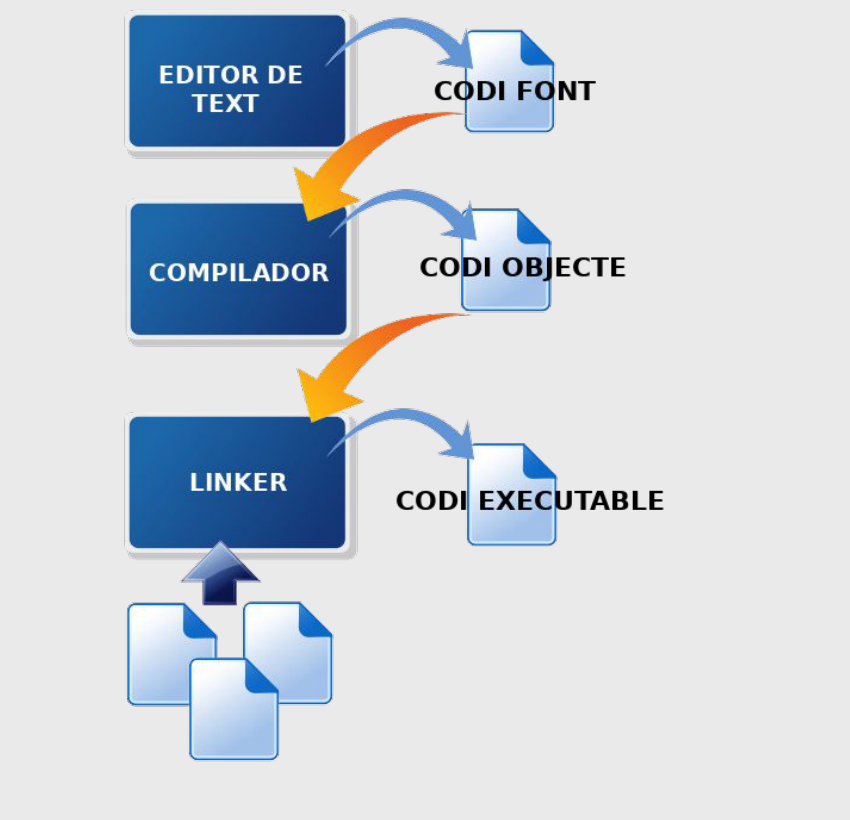
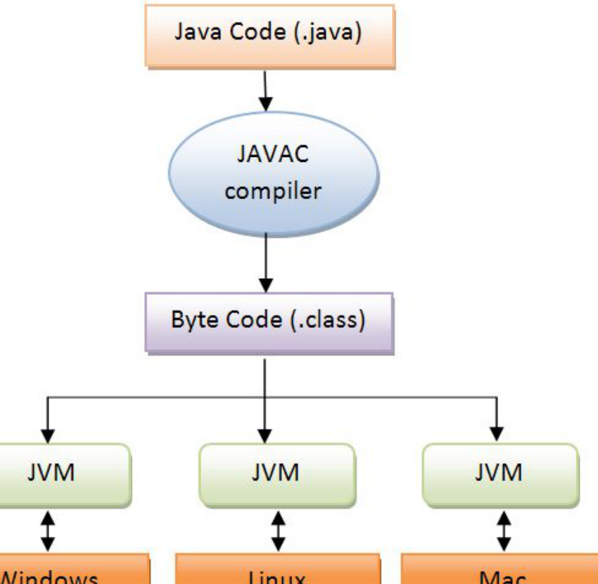
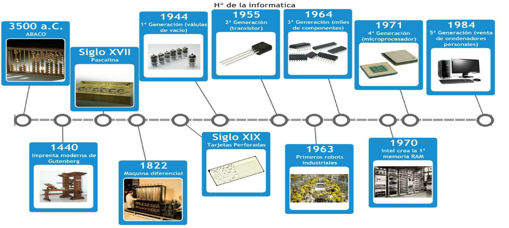
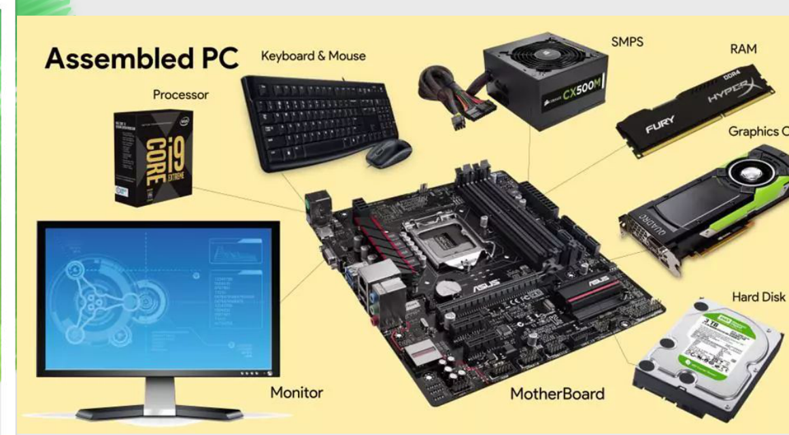
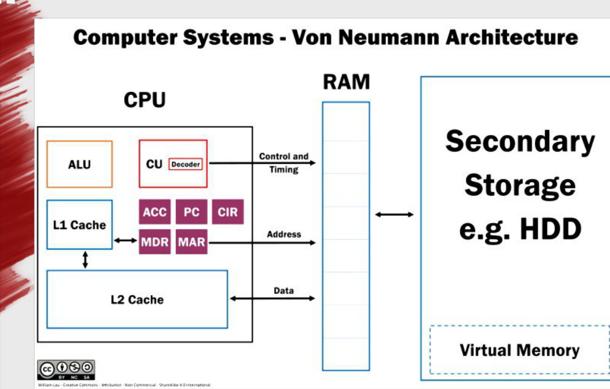
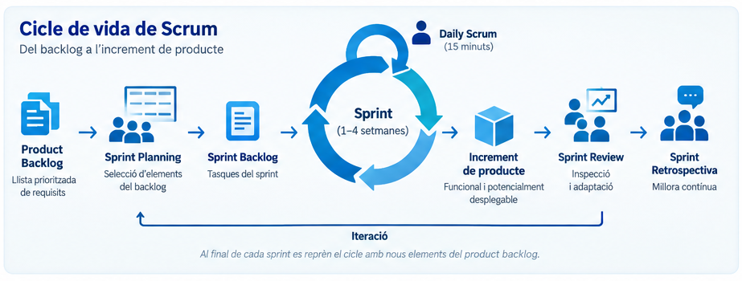

Què és un programa informàtic?
És un seguit d'ordres que es porten a terme seqüencialment, aplicades sobre un conjunt de dades.
Codi font
És el conjunt de fitxers de text on es troben les instruccions que componen un programa. Pot estar escrit en un llenguatge d'alt nivell, assemblador, etc.
EL QUE ESCRIU EL PROGRAMADORBiblioteca
És una col·lecció de codi predefinit que facilita la tasca del programador a l'hora de codificar un programa.
CODI REUTILITZABLECom podem classificar els programes i els llenguatges?
Hi ha diverses maneres de classificar els programes i els llenguatges. Cada una ens ajuda a mirar-los des d'un punt de vista diferent.
De sistema · d'aplicació · de desenvolupament
Els programes de sistema ajuden al funcionament de l'ordinador; els d'aplicació resolen necessitats de l'usuari; els de desenvolupament serveixen per crear programari.
Baix nivell · nivell mig · alt nivell
Com més alt és el nivell d'abstracció, més allunyat està el llenguatge dels detalls físics del processador.
Compilats · interpretats
La classificació diferencia si la traducció es fa abans de l'execució o durant l'execució.
Imperatius · funcionals · lògics · estructurats · orientats a objectes
El paradigma indica una manera de plantejar i organitzar la solució.
Programari, llenguatges i eines
Programari
El conjunt general de programes s'anomena programari (software).
Biblioteques
Col·leccions de codi predefinit que podem reutilitzar per facilitar el desenvolupament.
Compilació, codi objecte i codi executable
Hi ha tres elements importants: codi font, codi objecte i codi executable.

Codi objecte
És el codi font traduït pel compilador a codi màquina, però encara no pot ser executat per l'ordinador com a programa final.
Codi executable
És el resultat de completar el procés. L'enllaçador (linker) incorpora les funcions de les biblioteques necessàries i genera l'arxiu executable.
Segueix el viatge del codi
Prem el botó per veure com avança el programa pel procés.
Compiladors vs. intèrprets
El programador escriu codi font en un llenguatge de programació. Aquest codi s'ha de traduir perquè l'ordinador el pugui executar. Hi ha dues formes clàssiques de fer-ho: mitjançant un compilador o mitjançant un intèrpret.
Tradueix abans d'executar
El compilador tradueix el programa font abans de l'execució i genera codi traduït que després pot ser executat.
- La traducció es fa abans de l'execució.
- Els errors de compilació s'han de corregir abans de poder generar el programa executable.
- El programa compilat pot executar-se directament segons la plataforma per a la qual s'ha generat.
C · C++Tradueix durant l'execució
L'intèrpret va traduint i executant el codi quan el programa s'està executant, en lloc de generar prèviament tot el programa executable.
- La traducció es produeix en temps d'execució.
- No cal generar prèviament un executable tradicional.
- Facilita la portabilitat si existeix l'intèrpret adequat per a cada sistema.
JavaScript · PHP · ASPQuina és la diferència principal?
La diferència més fàcil de recordar és quan es fa la traducció.
Un exemple molt senzill
Imagina que tens un llibre escrit en català i abans de llegir-lo vols tenir-lo completament traduït a l'anglès. Primer fas tota la traducció i després llegeixes el resultat.
Imagina una persona que tradueix una conversa en temps real. Vas dient una frase, la tradueix i s'entén; després continues amb la següent.
Java: codi intermedi i màquina virtual
Java és un exemple de llenguatge que compila el codi font a bytecode (fitxers .class) i després l'executa sobre una JVM (Java Virtual Machine).

Tipus, generacions i paradigmes
Els llenguatges de programació es poden classificar per generacions. Aquesta classificació ajuda a entendre com ha augmentat el nivell d'abstracció respecte de la màquina.
Una mica d'història

Van permetre codificar instruccions i dades mitjançant perforacions físiques.
Instruccions representades directament amb codis que el processador pot entendre.
1a generació
Llenguatge màquina. L'únic que l'ordinador entén directament.
2a generació
Assemblador. Utilitza codis mnemotècnics i és proper a l'estructura interna de la màquina.
3a generació
Alt nivell. Utilitza paraules i estructures més fàcils d'entendre. Ex.: C, C++.
4a generació
Propòsit específic. Alt nivell d'abstracció, especialment negoci i bases de dades.
5a generació
IA i sistemes experts. Ex.: Lisp i Prolog.
Les cinc generacions, en una mirada
Llenguatge màquina
Codi binari directament relacionat amb el processador. Requereix molt esforç i és poc portable.
Assemblador
Utilitza mnemònics que representen instruccions bàsiques del processador.
Alt nivell
Més semblant al llenguatge humà. Alguns exemples són FORTRAN, COBOL, BASIC, LISP, PASCAL i C.
Orientats a l'usuari
Augmenten l'abstracció i permeten indicar què es vol obtenir sense descriure tots els passos.
Restriccions i IA
Alguns exemples són PROLOG, MERCURY i OPS5.
Paradigmes de programació
Un paradigma de programació és una manera de plantejar i organitzar un programa. No és un llenguatge concret: és un model o estil que ens indica com pensem el problema i com estructurem la solució. Un mateix llenguatge pot permetre més d'un paradigma.
Quan programem, podem explicar sobretot com s'han de fer les coses, què volem obtenir o organitzar el programa al voltant d'objectes i del seu comportament.
El programa és una seqüència d'instruccions que modifiquen l'estat del programa: assignacions, condicions, bucles, etc.
contador = contador + 1C · C++ · Python · Java
Els objectes representen elements del problema. Agrupen atributs (dades) i mètodes (accions) i poden relacionar-se entre ells.
cotxe.arrencar()Java · C# · C++ · Python
Es dona molta importància a les funcions i a la transformació de dades. Es procura reduir els canvis d'estat i els efectes secundaris.
resultat = map(funcio, dades)Haskell · Lisp · Scala
El programador expressa el resultat que vol aconseguir i deixa que el llenguatge o el sistema determini part de la manera d'obtenir-lo.
SELECT nom FROM alumnes;SQL
El programa es basa en fets, regles i relacions. El motor de resolució busca una resposta a partir del coneixement definit.
avi(X,Y) :- pare(X,Z), pare(Z,Y).Prolog
Mateix problema, diferents maneres de pensar
Imagina que volem obtenir els noms dels alumnes majors de 18 anys.
Característiques d'alguns llenguatges difosos
| Llenguatge | Característiques | Usos habituals |
|---|---|---|
| C / C++ | Alt rendiment, control de recursos, molt utilitzats en sistemes i programari de baix nivell. | Sistemes, motors, aplicacions de rendiment. |
| Java | Orientat a objectes, fortament tipat, compilació a bytecode i execució sobre JVM. | Aplicacions empresarials, serveis, Android històricament. |
| JavaScript | Dinàmic, multiparadigma i molt vinculat al desenvolupament web; els motors moderns utilitzen JIT. | Web client, Node.js i aplicacions web. |
| Python | Sintaxi clara, multiparadigma i gran ecosistema de biblioteques. | Web, automatització, dades i IA. |
| PHP | Llenguatge orientat principalment al desenvolupament web de servidor. | Aplicacions web i backend. |
| SQL | Llenguatge declaratiu especialitzat en consulta i manipulació de bases de dades. | Bases de dades. |
La distinció «compilat vs. interpretat» és útil per començar, però els entorns moderns poden combinar interpretació, compilació JIT i altres tècniques. Per exemple, els motors JavaScript moderns poden compilar en temps d'execució.
Sistema informàtic
Per entendre l'execució d'un programa també hem de relacionar-lo amb els components del sistema informàtic: processador, memòria i perifèrics.

CPU · processador
Descodifica i executa les instruccions dels programes i coordina el funcionament de l'ordinador. Inclou unitat de control, ALU i registres.
Memòria RAM
Emmagatzema temporalment les instruccions i dades que s'estan utilitzant. És una memòria volàtil.
Disc dur / emmagatzematge
És un exemple d'emmagatzematge no volàtil, on les dades es conserven quan apaguem l'ordinador.
GPU · targeta gràfica
S'encarrega del processament gràfic. Pot ser dedicada o estar integrada en el sistema.
Placa base
Interconnecta els diferents components i permet comunicar-los entre ells.
Perifèrics i xarxa
Permeten l'entrada i sortida d'informació i la comunicació amb altres sistemes. Ex.: teclat, pantalla, Ethernet o Wi-Fi.
Arquitectura de Von Neumann
El model relaciona el processador, la memòria i l'emmagatzematge per explicar com es processen les instruccions i les dades.

Fases del desenvolupament d'una aplicació
Desenvolupar programari no és només programar. El procés inclou un conjunt de fases que permeten passar d'una necessitat a una aplicació en funcionament i mantenir-la al llarg del temps.
Desenvolupar, provar, aprendre i adaptar-se
Hi ha diferents models de cicle de vida —cascada, prototips, espiral, iteratiu, RAD i procés unificat— i metodologies àgils com Scrum.

Seqüència més lineal
Les fases es plantegen de manera ordenada. És fàcil de visualitzar, però adaptar-se a canvis tardans pot ser costós.
Iteracions curtes
El treball s'organitza en Sprints i es busca inspeccionar el resultat i adaptar el següent pas.